A whole-home refresh really doesn't require redesigning every single room at once, even though it can feel that way once the idea takes hold.
Picking just one meaningful change per room is genuinely enough to shift how the entire house feels, all without the overwhelm of a full top-to-bottom renovation project.
These 15 ideas cover one highest-impact starting point for eight different rooms, a sampler to pull from whenever the mood strikes, not a checklist anyone needs to finish in a single weekend.
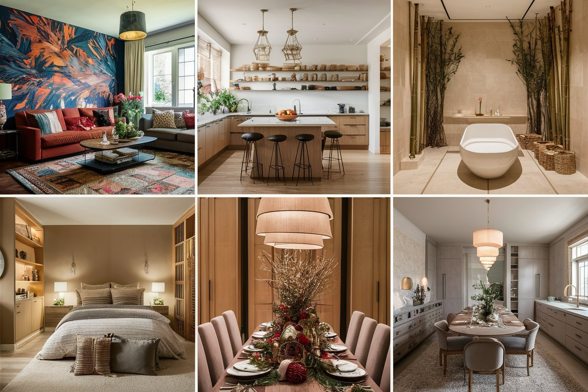
Kids' Room: Try Wall Decals
Wall decals bring color and personality into a kids' room without any commitment to paint, and they're easy to swap out as taste changes year after year.
This is one of the most flexible ideas on the entire list, low-cost, low-commitment, and genuinely kid-approved from the start.
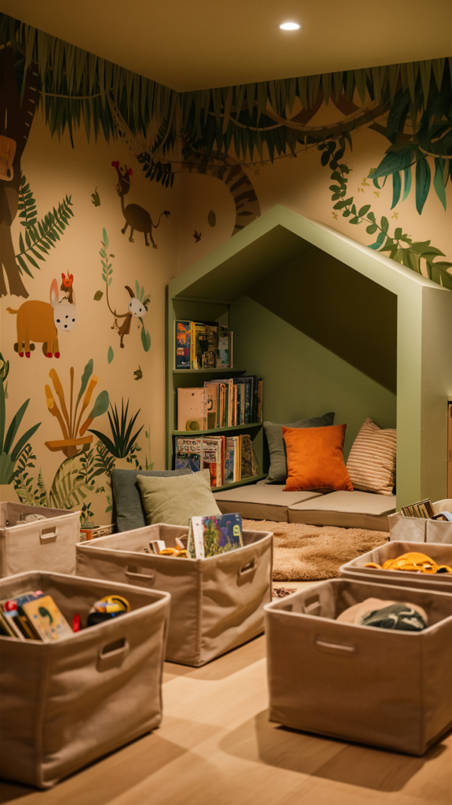
Entryway: Add Considered Wall Decor
A single intentional piece, a mirror, a woven hanging, a piece of art, keeps the entryway from feeling random or completely unfinished.
This works well paired with a console table, or it can stand entirely on its own in a smaller entryway that doesn't have the floor space for extra furniture.
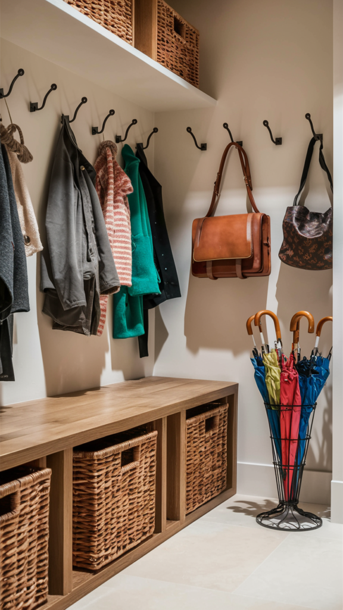
Entryway: Or a Wood Console Table
A simple wood table at the entrance gives guests somewhere to land and gives the whole space a sense of welcome it might currently be missing.
It also solves a genuinely practical problem, somewhere for keys, mail, and bags to actually go, right alongside the style upgrade.
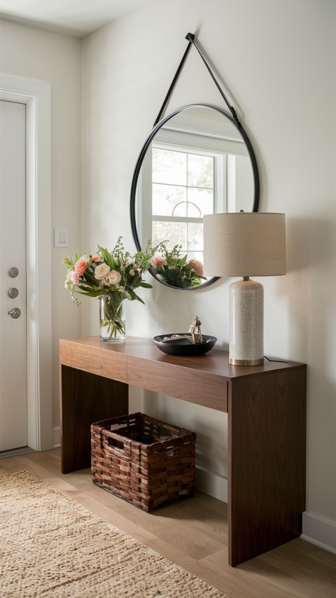
Home Office: Add Decor That Actually Motivates
A vision board, a meaningful quote, or a piece of art tied to an actual personal goal does more for daily motivation than any generic office decor ever could.
This works best when it's genuinely specific to the person using the space, rather than a one-size-fits-all office poster picked up because it was on sale.
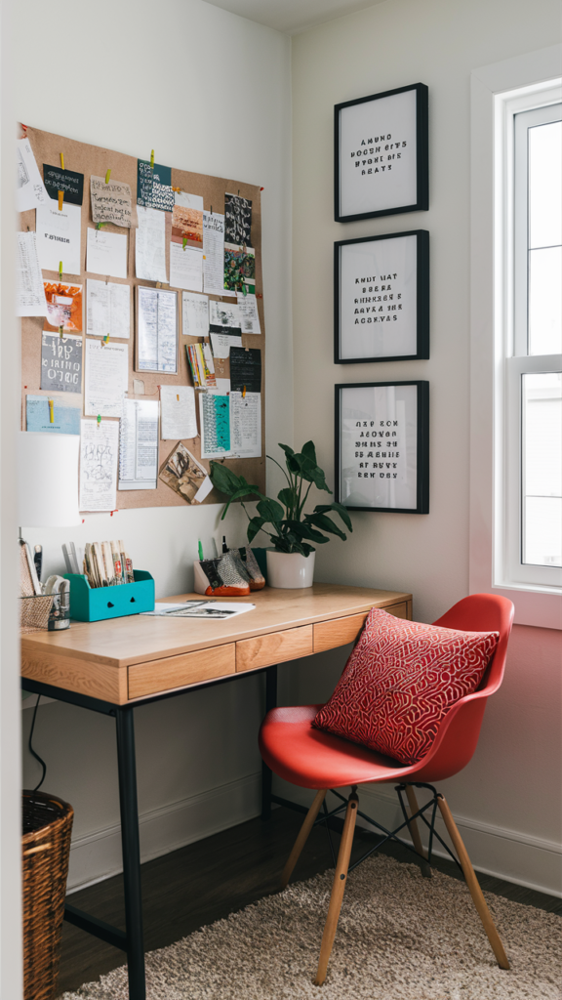
Home Office: Or Build a Desk Setup That Fits
A desk setup that actually reflects personal taste, not just whatever happened to come with the furniture, makes the whole room feel noticeably more motivating to sit down and work in.
This is worth revisiting even in an office that's already furnished, since the setup itself tends to matter more than the furniture underneath it.
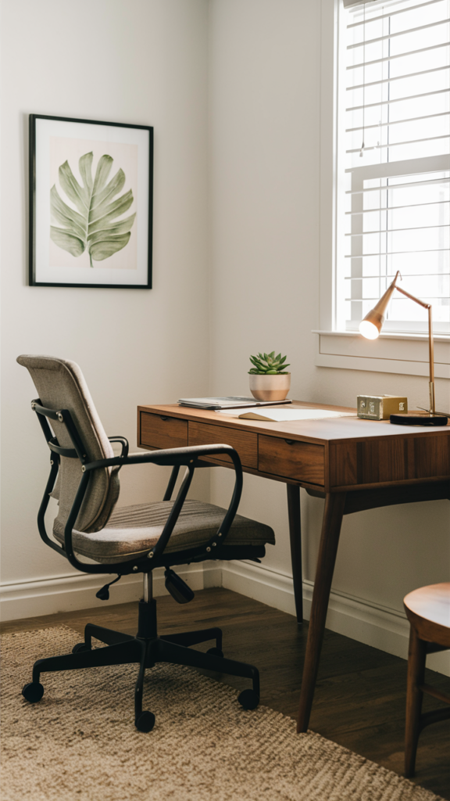
Bathroom: Add a Statement Mirror
Swapping a builder-grade mirror for a statement piece changes the whole room's character more than almost any other single bathroom update you could make.
A round or arched shape softens a bathroom that's otherwise full of straight lines and hard surfaces, which is often exactly what the space needs.
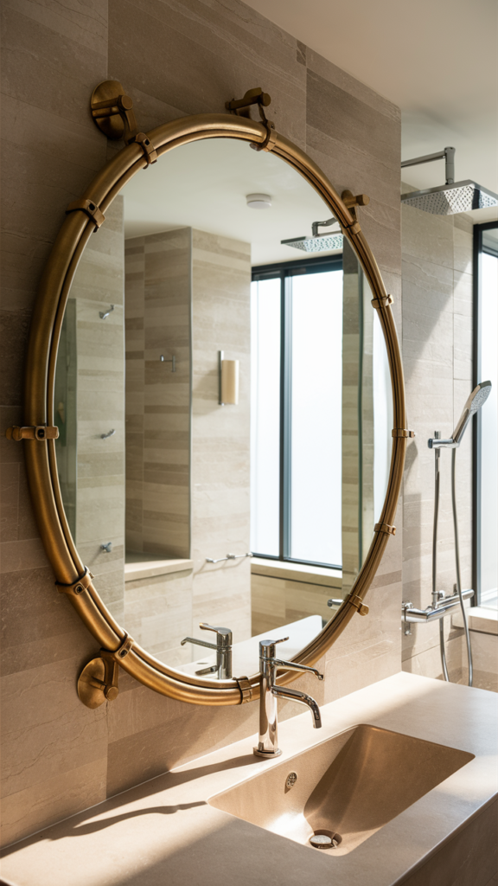
Bathroom: Or Make It Feel Like a Spa
Fluffy towels, a simple tray of bath products, and a touch of greenery go a long way toward a spa-like feel, with absolutely zero remodeling required.
This works in any bathroom, regardless of its size or whatever fixtures already exist, since it's purely a styling change rather than a structural one.
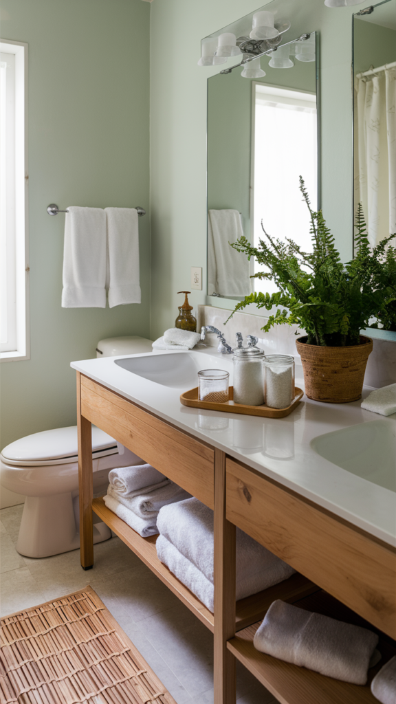
Bedroom: Upgrade the Nightstands
A nightstand that's actually styled, a lamp, a small stack of books, one considered object, does far more for the room than a bare surface ever will.
This is a small, contained project that still manages to change the whole room's sense of feeling genuinely finished.
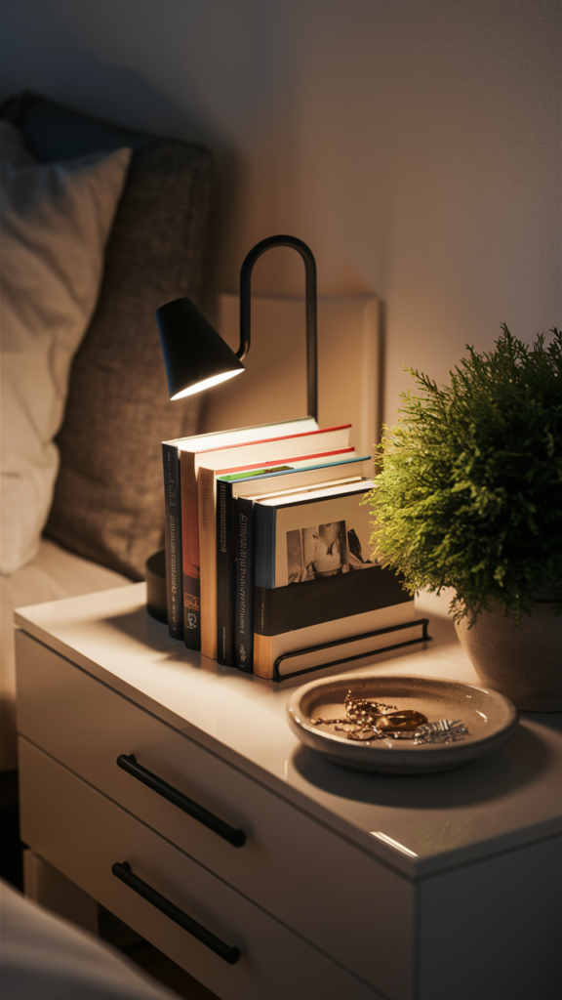
Bedroom: Or Layer the Bedding
Layered bedding, a duvet, a throw, a few genuinely well-chosen pillows, brings a hotel-like feel into the bedroom for a relatively small investment.
This is one of the easiest high-impact changes on this entire list, since it requires absolutely no furniture or structural change at all.
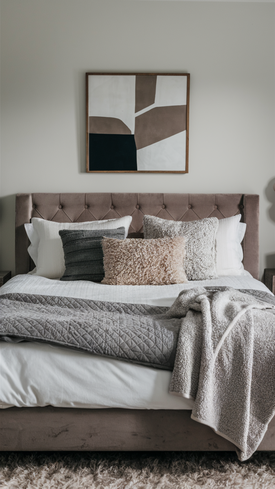
Dining Room: Fix the Centerpiece
An empty or forgettable dining table centerpiece is an easy, low-cost fix with a surprisingly real visual payoff for the amount of effort involved.
A seasonal arrangement, a simple bowl of fruit, or a cluster of candles all do more work for the room than an empty table ever will.
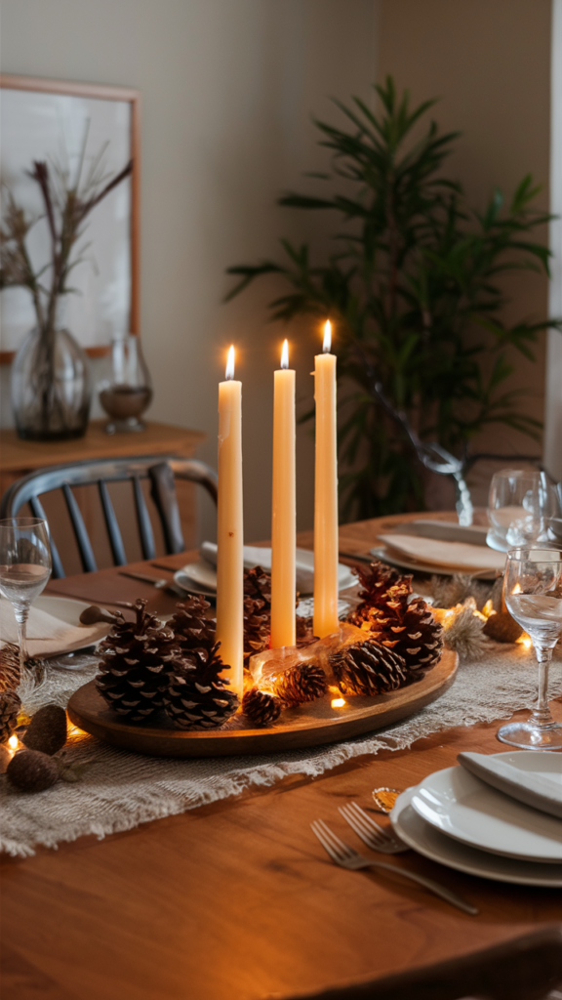
Dining Room: Or Build a Gallery Wall
A gallery wall gives the dining room an actual story to tell, turning a purely functional space into one with real personality behind it.
A consistent frame style across the whole collection keeps a mix of art and photos feeling genuinely curated instead of merely cluttered.
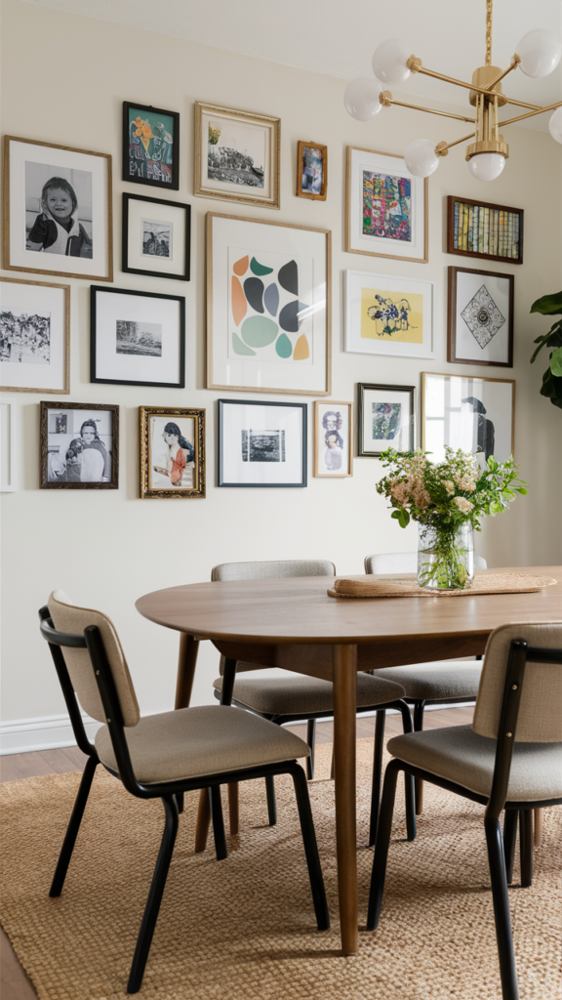
Kitchen: Upgrade the Island Lighting
A set of statement pendants over the island does more for a kitchen's overall mood than almost any other single fixture change available.
This is a relatively contained project, a few fixtures, not a full rewiring job, with an outsized visual payoff for the effort it actually takes.
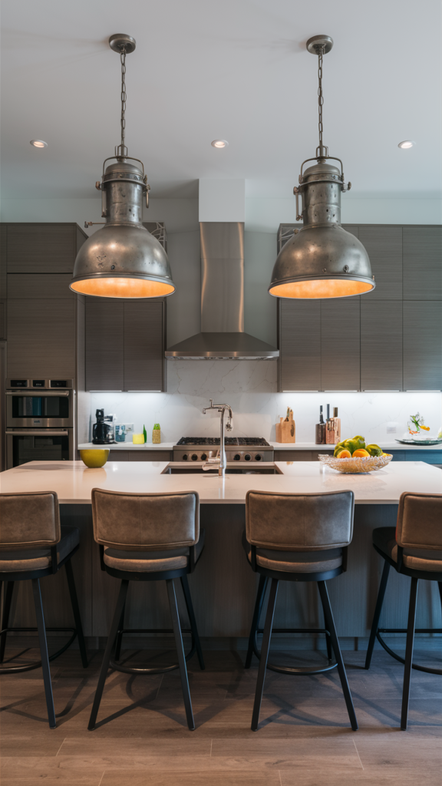
Kitchen: Or Try Open Shelving
Swapping even one upper cabinet for open shelving changes how the whole kitchen feels, giving it a noticeably lighter, more collected look overall.
This also doubles as a built-in display opportunity for dishware that would otherwise stay hidden behind closed cabinet doors indefinitely.
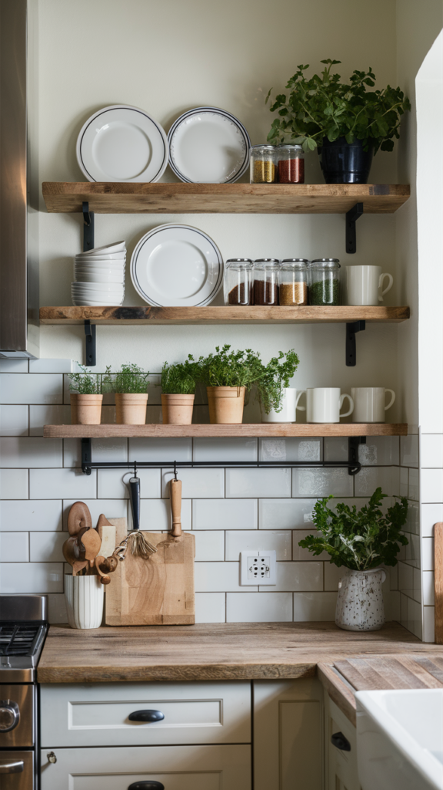
Living Room: Try a Textured Rug
If the walls already feel settled, a textured rug is the next highest-impact change available, grounding the furniture and adding real warmth underfoot.
Layering a smaller patterned rug over a larger neutral one adds genuine depth without committing to a full room redo.
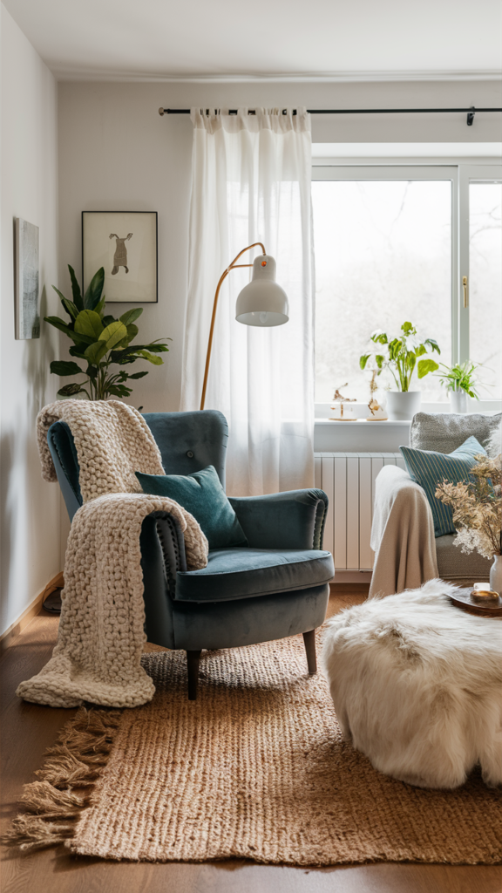
Living Room: Or Start With Wall Art
A single bold piece of art does more to set a living room's overall tone than almost any other single change you could make.
Scale matters more than subject matter here, one confident piece reads far better on a wall than several small ones all competing for attention at once.
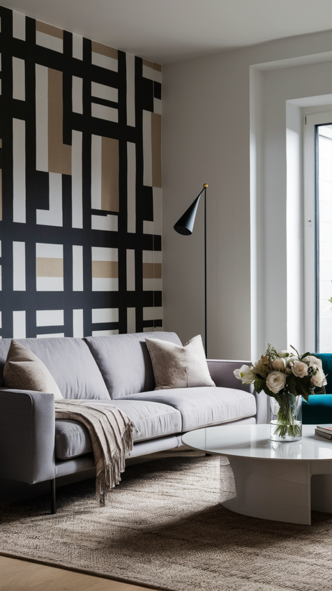
Final Thoughts
None of these 15 ideas require tackling the entire house all at once, and trying to do that would honestly defeat the whole point.
Pick whichever room bothers you the most right now, choose just one idea from this list, and let the rest follow naturally over time, there's no deadline attached to any of it.
A home refreshed one room, and one idea, at a time still adds up to a completely different-feeling house in the end, often faster than people expect.